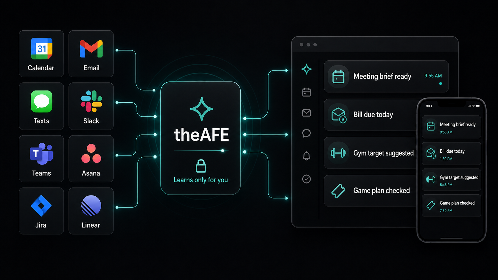

The Assistant For Everyone
One proactive assistant for the moments your apps miss.
theAFE connects the signals across your day and turns them into timely briefs, reminders, study aids, and next steps before you need to ask.
Private by default
Learns only for you
No one can access it, not even us

Connect the apps you already use
From scattered notifications to one useful signal.
How it works
Designed to act early, quietly, and with boundaries.
Listen with permission
Connect calendar, email, messages, tasks, and work tools. theAFE only works with the sources you approve.
Understand your context
It learns your routines, commitments, preferences, and work patterns for your assistant only.
Surface the next right thing
Instead of another feed of alerts, you get a brief, reminder, or action when it is actually useful.
Natural input
Talk, type, show, or share context however it happens.
theAFE should fit the moment, whether you are typing a quick note, speaking on the move, sharing a screenshot, or capturing a video explanation for later.
Text
Messages, notes, tasks, emails, documents, and pasted context.
Voice
Quick thoughts, reminders, meeting context, and hands-free capture.
Images
Screenshots, whiteboards, receipts, homework, and visual notes.
Video
Recorded explanations, lectures, walkthroughs, and richer context.
Proactive moments
Useful help without making you manage another app.
Walk into meetings prepared
Five minutes before a meeting, get the context that matters. A note taker can capture decisions, create action items, and bring them back when they need attention.
Catch the bill before it becomes a fee
If an email says a payment is due today and you have not handled it, theAFE can bring it back at the right time.
Make routines smarter
When you reach the gym, your assistant can use your training log to suggest a realistic target for the day.
Protect plans you care about
Book tickets for a game and theAFE can check your calendar, travel time, and conflicts before the day gets messy.
Remember what you study
Turn class notes, lectures, and reading material into flashcards and spaced review prompts so important ideas last longer.
Practice before the exam
Generate mock tests from your notes, then highlight weak areas so you know what deserves another pass.
Connect unrelated notes
Find links across scattered notes, surface surprising patterns, and give you a brief that makes the bigger picture easier to see.
For individuals
Personal productivity that respects real life.
Bills, workouts, texts, errands, plans, personal email, Asana tasks, notes, study routines, and calendar commitments handled with context.
For teams
Work productivity without notification fatigue.
Meetings, Slack, Teams, email, Jira, Linear, follow-ups, and action items organized into what needs attention next.
Trust model
Your assistant learns for you, not for everyone.
theAFE is being designed around private memory, explicit permissions, and safe boundaries for proactive behavior. Your data is not used for generalized training, and no one can access your assistant, not even us.
Permissioned connections
User-owned memory
Private-by-design architecture
Proactive actions with clear limits
Planned everywhere
iOS
Android
macOS
Windows
Linux
iPadOS
Early access
Help shape the first version of theAFE.
Join the waitlist and tell us where a proactive assistant would save you the most attention.